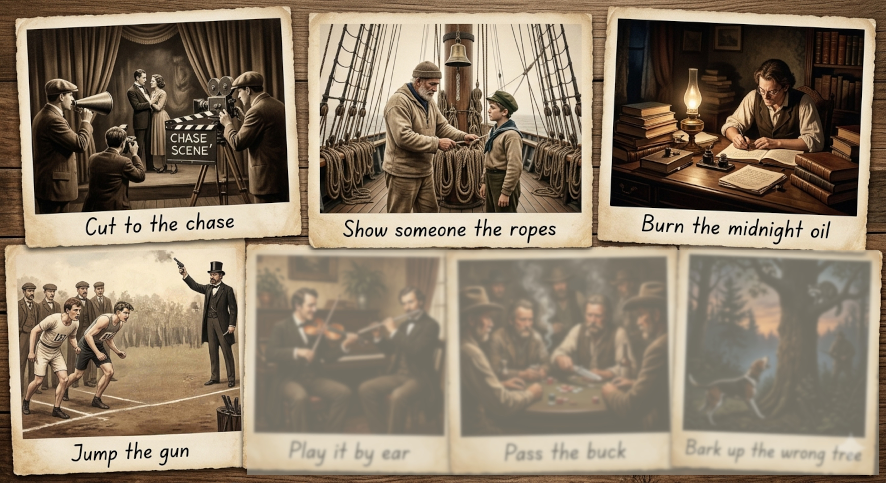
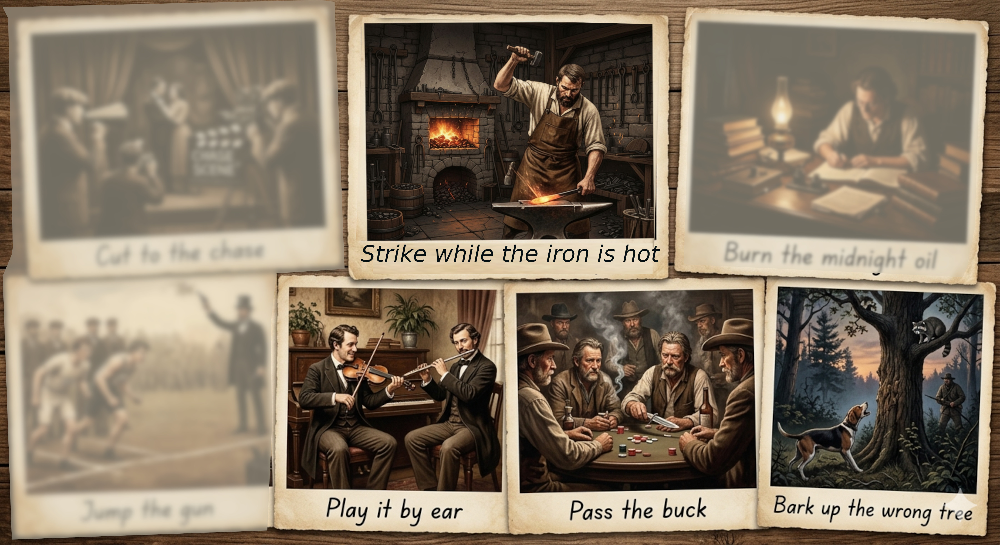

Cut to the chase
The History:
From early silent movies. Directors would "cut" (edit) the film to skip slow scenes and go straight to the exciting "chase scene" at the end.
Business Meaning:
To stop wasting time and get to the most important point.
"We only have five minutes left, so let's cut to the chase: what is the final price?"
Show someone the ropes
The History:
A sailing term. On old wooden ships, sailors had to learn which of the hundreds of ropes controlled each sail.
Business Meaning:
To train a new person or show them how a system works.
"It’s Sarah’s first day. Can you spend the morning showing her the ropes?"
Burn the midnight oil
The History:
Before electricity, staying up late meant using expensive oil lamps. Doing this showed you were working very hard.
Business Meaning:
To work late into the night to finish a project.
"The deadline is tomorrow, so I'll be burning the midnight oil tonight."
Jump the gun
The History:
From track and field races. If a runner starts running before they hear the starter's pistol, they have "jumped the gun."
Business Meaning:
To act too early or start something before the right time.
"We shouldn't announce the deal yet; if we jump the gun, it might fail."

Play it by ear
The History:
A music term. Some musicians can play a song just by listening to it, without needing written music (sheet music).
Business Meaning:
To deal with a situation as it happens, rather than following a strict plan.
"I don't have a formal schedule; let's just play it by ear today."
Pass the buck
The History:
From 1800s poker. A marker (often a knife with a "buckhorn" handle) was placed in front of the dealer. A player could "pass" the turn to deal to the next person.
Business Meaning:
To shift responsibility or blame for a problem to someone else.
"When the project failed, the manager tried to pass the buck to his team."
Strike while the iron is hot
The History:
From blacksmithing. A blacksmith must hit the iron while it is red-hot to shape it. Once it cools down, it becomes impossible to change.
Business Meaning:
To take action immediately while the situation is in your favor.
"The client is interested now. We should strike while the iron is hot."
Bark up the wrong tree
The History:
From hunting dogs. A dog might bark at a tree thinking a raccoon is there, but the raccoon has already jumped to a different tree.
Business Meaning:
To follow the wrong plan or look for a solution in the wrong place.
"If you think I'm responsible for the error, you're barking up the wrong tree."